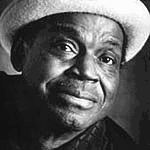
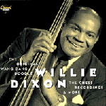

|
|
|
|
Рос в семье сельских сезонных рабочих. Отец был социально неуправляемым человеком, вероятно, преступником. Первые блюзы и рассказы об истории блюза и блюзовых стилях услышал от отчима. Мать пересказывала библейские истории и сочиняла проповеди в рифмованных строчках. Диксон с ранних лет работал в поле, выполняя поденную работу, был мусорщиком, угольщиком и т.д. С детства сочинял стихи для песен и записывал их в блокнот. Позже некоторые из этих текстов ему удалось продать профессиональным композиторам. Пел в церковном хоре. Участвовал в религиозном вокальном ансамбле "Юнион Джубили Сингерз" (Union Jubilee Singers), в составе которого выступал на виксбургской средневолновой радиостанции. Подростком дважды получил тюремный срок: за бродяжничество и за воровство - по его мнению, оба раза несправедливо. В 1936г. переехал в Чикаго. Пробовал свои силы как певец одновременно в жанрах и танцевальной, и религиозной музыки. Так же пытался начать карьеру профессионального боксера. Чемпион 1938г. штата Иллинойс "Золотые перчатки" в тяжелом весе. Спаринговал Джо Луису. Ушел из бокса, обнаружив, что его менеджер присваивает большую часть его гонораров. В этот период знакомится с гитаристом Леонардом "Бейби Бу" Кастоном (Leonard "Baby Boo" Caston) и под его влиянием начинает учиться играть на контрабасе. Вместе они собирают вокально-инструментальный ансамбль "Файв Бризис"(Five Breezes), исполняющий разнообразную танцевальную музыку. Группа выступает в чикагских клубах и делает первые записи для пластинок. В 1941г. Вилли Диксон арестован на сцене во время очередного выступления и обвинен в уклонении от военного призыва. Он заявляет об отказе служить в ВО США по политическим мотивам, отказывается от адвоката и, самостоятельно защищая себя в суде, декларирует, что он не является гражданином США и ничего не должен государству и правительству, поскольку вырос и сохранил жизнь не благодаря, а вопреки существующим законам, дискриминирующим права афроамериканцев. Приговор по его делу не был вынесен. Вилли Диксон выпущен из тюрьмы по подписке, что, по его мнению, еще раз подтвердило его правоту: законы США не распространяются на афроамериканцев. В это время Леонард Кастон с группой "Ритм Рэскалз"(Rhythm Rascals) проводит концерты для американских войск в Северной Африке, Европе и на островах Тихого океана. Отпущенный на свободу, Вилли Диксон собирает свой ансамбль "Фор Джампс Оф Джайв"(Four Jamps Of Jive), с которым выступает в Чикагских клубах и в 1945г. записывает несколько пластинок для фирмы "Меркюри"(Mercury). По возвращению в Чикаго Леонарда Кастона, Вилли Диксон организует ансамбль "Биг Три Трио" (The Big Three Trio), в котором он поет, играет на контрабасе, Леонард Кастон поет, играет на фортепиано, Олли Крауфорд (Ollie Crawford) поет, играет на гитаре. В 1947г. "Биг Три Трио подписывают контракт с мэджор-фирмой "Коламбиа"(Columbia) и записывают несколько пластинок. Исполняя в рамках "Биг Три Трио" эстрадный репертуар, Диксон начинает принимать участие в блюзовых джемах чикагских блюзмэнов и изредка получает приглашение аккомпанировать им в студии новой чикагской фирмы звукозаписи "Чесс". Постепенно Вилли Диксон принимает все более активное участие в работе студии "Чесс". Концертная деятельность в рамках "Биг Три Трио" отходит для него на второй план, в 1952г. ансамбль фактически прекращает свою деятельность. На студии "Чесс" Вилли Диксон становится занимает должность "ответственного за репертуар и артистов" (A&R), занимается аранжировками, организует сессии звукозаписи, аккомпанирует на записи и ведет поиск новых талантов. Как вокалист он выпускает несколько синглов под собственным именем. В 1954г. Мадди Уотерс (Muddy Waters) записывает блюз Вилли Диксона "Hoochie Coochie Man" (Сорви-голова), отмечающий важный этап в развитии блюза как жанра. Песня получает большую популярность. В этот же год еще два ведущих артиста "Чесс": Хаулин Вулф (Howlin' Wolf) и Литл Уолтер (Little Walter)- записывают песни Вилли Диксона, которые мгновенно становятся хитами. На протяжении последующего десятилетия он очень плодотворно работает как композитор. Его песни имеют большой успех, а в 60-х и 70-х переживают новое рождение, поскольку они вновь становятся хитами уже в интерпретации рок-музыкантов: "Роллинг Стоунз"(Rolling Stones), "Ярдбердз" (Yardbirds), "Дорз"(The Doors), "Крим" (Cream), "Лед Зепплин" (Led Zeppelin) и многих других. Большинство из этих песен и поныне считаются живой классикой блюза, поскольку продолжают входить в постоянный репертуар блюзовых музыкантов разных поколений.  "Во второй половине 50-х как композитор, аранжировщик и аккомпаниатор работает с Чаком Берри (Chuck Berry) и Бо Диддли (Bo Diddley), принимая таким образом участие в формировании рок-н-ролла.В 1957г. принимает участии в формировании нового течения чикагского блюза: Уэст-Сайд блюз. На фирме "Кобра" (Cobra) помогает музыкантам следующего поколения: Мэджику Сэму (Magic Sam), Отису Рашу (Otis Rush) и Бадди Гаю (Buddy Guy). В 1960г. записывает дебютный альбом в дуэте с пианистом-вокалистом Мемфисом Слимом (Memphis Slim). В 60-х и 70-х является одним из инициаторов и принимает активнейшее участие в организации европейских гастролей ревю American Folk Blues Festival ("Американский фолк-блюзовый фестиваль"), в котором в разные годы выступают все звезды блюза своего времени, за редким исключением. Находит и помогает сделать первые шаги на профессиональной сцене певице Коко Тейлор (Koko Taylor), которую с начала 70-х будут именовать "Королевой блюза". В 1969г. принимает участие в записи дебютного альбома блюз-рокового гитариста Джонни Уинтера (Johnny Winter), с которым будет неоднократно выступать и записываться и в дальнейшем. В 1970г. записывает альбом "I'm The Blues"("Я и есть блюз"), представляющий его классические хиты в рок-аранжировках. В 70-х организует ансамбль "Все звезды Чикаго"(The Chicago All Stars), пишет и продюссирует музыку к кинофильмам, в том числе к "Цвету денег" М.Скорсезе. Выпускает книгу-автобиографию "Аз есмь блюз". В 1982г. создает благотворительный фонд Blues Heaven Foundation для помощи нуждающимся ветеранам блюза. Руководит рядом программ по пропаганде блюза, в том числе "Блюз в школе". В 1988г. записывает прощальный альбом, который не может издать на протяжении двух лет. В 1991г. этот альбом принес ему премию Грэмми - единственное и слишком скромное признание для его очевидных заслуг в области популярной музыки ХХ века. ВЭБ™'99У нас на "блюз-ру" есть раздел, посвященный Уилли Диксону. Там вы найдете статью о нем, перевод его последнего интервью 1991 года английскому еженедельнику "Нью Мьюзикал Экспресс" небольшую подборку текстов самых популярных его песен и несколько излишне пылкий путеводитель по его записям.
Дискография:
В сети: |